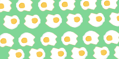

3 egg-citing ways to cook eggs


CRISPY FRY
That Perfect Crispy Edges. Fried in Shimmering Olive Oil, not Butter. Repeat: Olive Oil Sunnysides cooked on butter? Noo, that's not how you enjoy eggs, I believe. And I promise, the crispness that surrounds the molten yolk will be a great start to your day.
